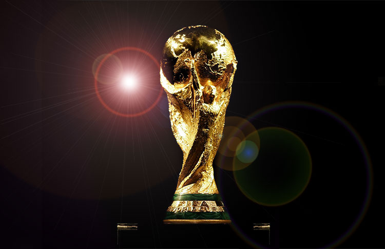

Argentina has allways been influenced by football. It is a high competitive country. This way wining 3 World Cup (1978, 1986 & 2022)
World Cup
How many times Argentina won a Football World Cup? & How many times Argetnina arrived to the finals?
Argentina is one of the most successful teams in the tournament's history, having won three World Cups: in 1978, 1986, and 2022. Argentina has also been runner-up three times: in 1930, 1990 and 2014. In 18 World Cup tournaments, Argentina has 47 victories in 88 matches.

History
What is it history
The Argentine Football Association (AFA) was formed in 1893 and is the eighth-oldest in the world. The first ever match Argentina played was against Uruguay, on 20 June 1902. The game, which was the first international for both sides, was held in Montevideo, and Argentina won 6–0.During the first years of its existence, Argentina only played friendly matches against other South American teams. The reasons for this varied, including long travel times between countries and the interruption due to World War I.
La Albiceleste has appeared in World Cup finals six times, including the first ever final in 30 July 1930, which they lost 4–2 to Uruguay. Argentina won their next final in 25 June 1978, beating the Netherlands 3–1. Eight years later, in 1986, Argentina led by Diego Maradona won their second title with a 3–2 victory over West Germany. Under the guidance of Maradona, they reached the final again, in 1990, but ultimately lost 1–0 to West Germany, by a much-disputed penalty. Led by Lionel Messi, Argentina reached the final in 2014, where they were beaten 1–0 by Germany in extra time. In 2022, again under the captaincy of Messi, Argentina won their third World Cup, beating France 4–2 on penalties, following a 3–3 draw after extra time. The team's World Cup–winning managers are César Luis Menotti in 1978, Carlos Bilardo in 1986 and Lionel Scaloni in 2022.
Argentina has also been very successful in the South American Football Championship, the Copa América, winning it 15 times, a record it shares with Uruguay; they were crowned champions most recently in 2021. The team also won the inaugural FIFA Confederations Cup in 1992 and the CONMEBOL–UEFA Cup of Champions in 1993 and 2022.
In March 2007, Argentina reached the top of the FIFA Men's World Ranking for the first time.
.jpg)